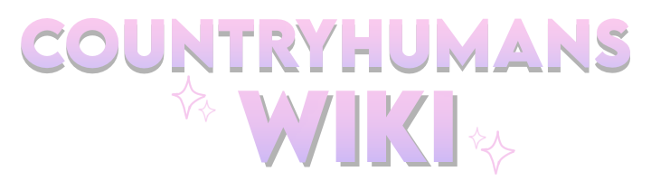
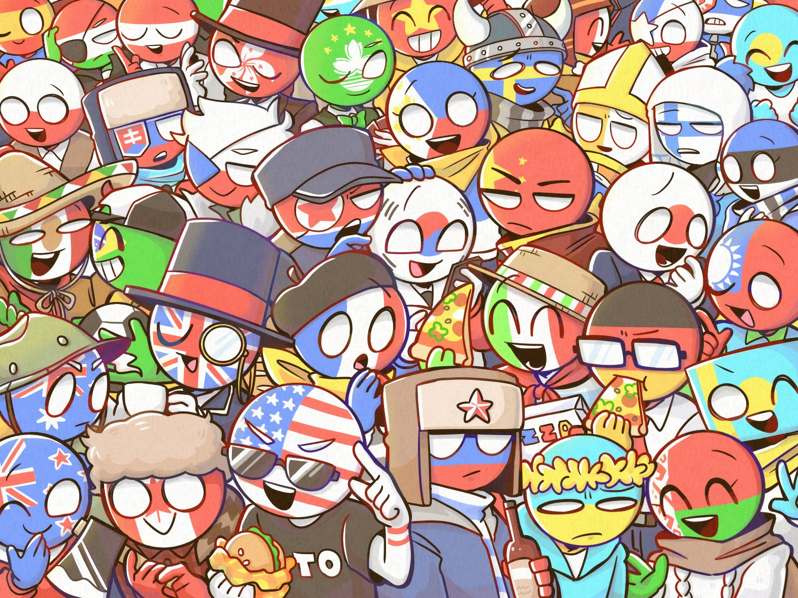

This page is a portal page for CountryHumans Wikis, which is actually wikis in multiple different languages that are not under a single authority. All these wikis accept countries, regions, states or administrative divisions, international organizations as content pages.

English – countryhumans.miraheze.orgEstablished on February 4, 2019 on Fandom. Migrated to Miraheze on August 11, 2021. It is currently the largest, oldest CH wiki. As an active one, there are many active users. It also has an active Discord server. Any profanity and ships are prohibited on this wiki.
Established on August 16, 2018 on Fandom. Migrated to Miraheze on January 1, 2022. A Russian wiki that is as old as the English wiki and of similar size. The design of the interface skin of this wiki is very good. Any profanity and ships are prohibited on this wiki.
Russian CountryHumans fandom is quite old, though it is not very active nowadays — and the same goes for this wiki.
Chinese CountryHumans wiki is an emerging and rapidly developing wiki. Established on January 21, 2025 on SkyWiki. Migrated to WikiOasis on August 11, 2021. Due to the wide spread of CountryHumans in China, contributors dedicated to high-quality summarization of countryHumans characters, terms and history.
In fact, this wiki is also known as Traditional TopicalHumans Wiki. Compared with other CountryHumans wikis, this wiki includes PartyHumans, EthnicHumans, PlanetHumans, etc., as well as various terms, events, community history and other previously related content — this wiki is the largest and most free wiki among all CountryHumans wikis in terms of coverage.
There is even an “Original” namespace where people can place their CountryHumans OCs or fictional things etc.
A very inactive little Spainese wiki that lacks contributions. Created on Miraheze on October 4, 2021. This wiki is at risk of being shut down; if you do not wish for this to happen, please edit it.
A very inactive little Polish wiki that lacks contributions. Created on Miraheze on November 26, 2022. This wiki is at risk of being shut down; if you do not wish for this to happen, please edit it.
A very inactive little Japanese wiki that lacks contributions. Created on KyoikuPortal on March 3, 2025. We don't know why — no Japanese people have come to edit it, even though the Japanese CountryHumans fandom is quite vibrant.

CountryHumans, abbreviated as CH, a kind of country personification or anthropomorphism. Contemporary CountryHumans originated from Polandball, but the characters are described as human, and are generally divided into semi-humanization and full-humanization: the former has flag face, including traditional ball head human and bold stickman, or humanoid that the shape of head follows real human; the latter that all follows the appearance of real human.
The term “countryhuman” is believed to have first appeared on Facebook in 2014 and has been used to describe other kind of country anthropomorphism. CountryHumans became an independent fandom on YouTube in 2017 that first became popular in the United States, Europe and Russia. At the end of 2018 It was introduced to Bilibili in China that known as “Polandball Anthropomorphic” at that time. In 2019–2020, It developed in East and Southeast Asia and Latin America. Now, it is currently one of the most popular country personification.
Often, CountryHumans simultaneously refers to its characters, creative means, and community or fandom. Essentially, it is a meme and art movement of anthropomorphism creation, which represents the history, interesting events, culture, relationships, and interactions in reality, including but not limited to countries, regions, dynasties, and international organizations. Since CH creation is based on reality, it is regarded as a kind of “derivative work” and “fan work,” and is a product of mass innovation. However, personification creation involves personal interpretation and to some extent contains original elements.
CountryHumans has drawn attention due to its relationship with reality and the anthropomorphism of countries, similar to Polonball and Hetalia. It has some derivatives and similar fandom, including OrganizationHumans, DynastyHumans, StateHumans (etc.), PartyHumans, EthnictyHumans, PlanetHumans, AppHumans etc. They sometimes also appear in CH works. Due to the inaction of the CH fandom in addressing issues such as ships and lower-tier community. It sometimes receives criticism.